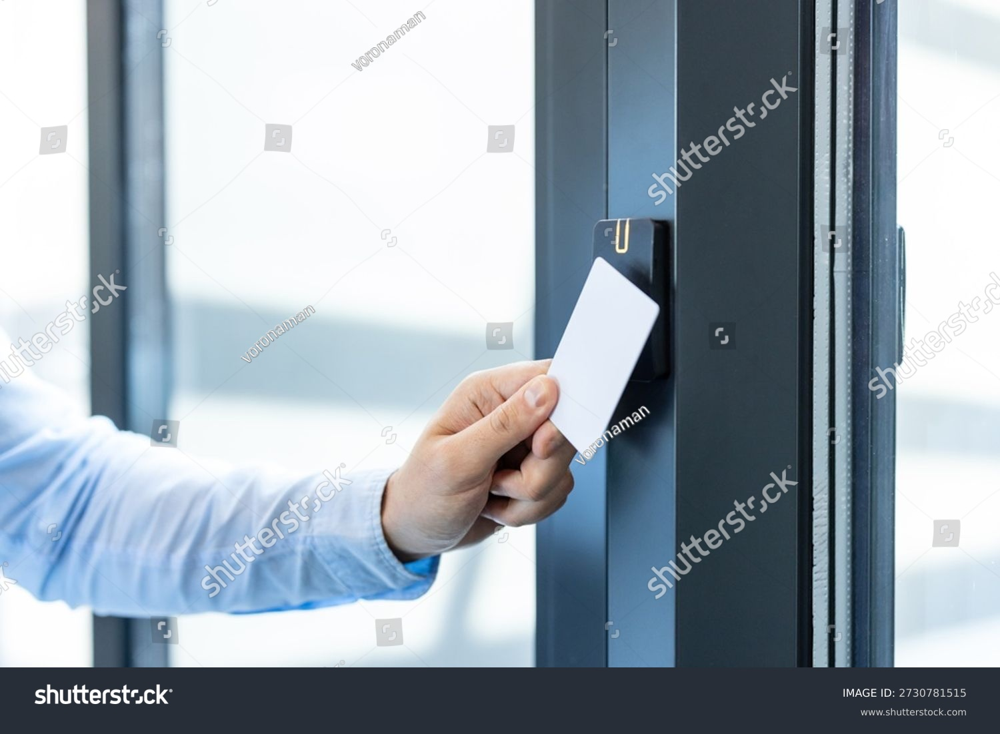

Kontrola pristupa
Upravljanje pristupom za objekte različitih veličina i namena, po zonama i nivoima prava.


Projektujemo i implementiramo bezbednosne sisteme koji štite objekte, korisnike i infrastrukturu, od kontrole pristupa i video nadzora do mrežne sigurnosti.
Savremeni bezbednosni sistemi ne služe samo za reakciju na incident, već za svakodnevnu kontrolu, preglednost i upravljanje pristupom, prostorom i infrastrukturom. TR Services pristupa sigurnosnim rešenjima kao delu šire tehnološke celine, sa ciljem da sistemi budu pouzdani, pregledni i prilagođeni realnim operativnim uslovima korisnika.
Upravljanje pristupom za objekte različitih veličina i namena, po zonama i nivoima prava.
Preglednost prostora i evidencija događaja, uz centralizovan pregled zapisa.
Osnova mrežne sigurnosti i kontrola saobraćaja između zona i servisa.
Segmentacija pristupa i organizacija prostora po nivoima rizika.
Povezivanje sigurnosnih sistema sa ostatkom IT i AV infrastrukture objekta.
Bezbednosni zahtevi značajno se razlikuju u zavisnosti od tipa objekta i načina korišćenja prostora. Kancelarijski objekti, hoteli, zdravstvene ustanove, industrijski kompleksi i kontrolni centri imaju različite prioritete, procedure i nivoe pristupa. Zbog toga svako rešenje razvijamo u skladu sa konkretnim operativnim scenarijima i očekivanim rizicima.

Efikasan bezbednosni sistem mora da omogući jasnu preglednost događaja i jednostavno upravljanje. Naš pristup uključuje izbor platformi koje podržavaju centralizovanu kontrolu, pregled zapisa, upravljanje korisnicima i pristupnim tačkama, kao i bolju koordinaciju između fizičke i mrežne bezbednosti.
Pored same implementacije, važan deo svakog sigurnosnog sistema je i njegova dugoročna pouzdanost. Zato projektujemo rešenja koja su stabilna, lako održiva i spremna za dalje proširenje, uz podršku koja omogućava da sistem ostane funkcionalan i pregledan tokom svakodnevnog rada.
Kontaktirajte nas za konsultacije i predlog sistema koji povezuje fizičku i mrežnu bezbednost u jednu stabilnu i preglednu celinu.
Kontaktirajte nas